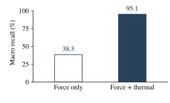

Thermal and Force Sensing for Material Recognition
Approach
I compared mechanical and thermal signals on CLAMP, PHAC-2, and SENS3. An overall gain on CLAMP masked declines in some groups. To test the value of thermal cues more directly, I compared force-only and force-plus-thermal inputs on the same three-class recognition task in SENS3.
Experimental results
The SENS3 pilot used 38 fingertip contact recordings across 19 surfaces. On surfaces held out of training, adding temperature change and heat flux increased macro recall from 38.3% to 95.1%.

With force and thermal inputs, macro recall was 57.5% and 69.4% on two splits that held out a participant. Those splits used less training data, so the comparison does not isolate the effect of changing participants.